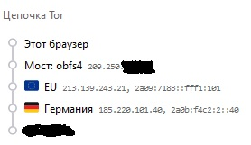

Друзья, хотел настроить Tor не использовать в построении цепочек узлы из одних и тех же стран. Например не допускать построения цепочек RU-RU-RU (очень маловероятный сценарий, но все же благодаря ТСПУ можно считать что в РФ есть глобальный наблюдатель) или DE-DE-DE (встречается ну очень часто).
Из актуального мануала решаю воспользоваться NodeFamily.
В torrc торбраузера вставляю все страны из iso и неопределенные страны, но результата нет, строит как и раньше
Также не будет работать строчка с адресом, без указания узла.
Узел идентифицируется отпечатком, не страной или адресом.
Код ищет указание на узел в строке NodeFamily, затем добавляет в семью все остальное в т.ч. все ноды со страной (странами).
NodeFamily исправляет недостаток информации для конкретного узла, а не все другое сразу.
Считаете это багом? Создайте тикет.
Но это скорей всего фича, а новую стоит риквестировать сразу в арти.
Против глобального наблюдателя сепарировать лучше по AS. Поищите по трекеру, в т.ч. закрытым тикетам, или рассылкам, там где-то обсуждалось. [1][2]
2023-09-28T14:42:18.864Z
x2922477383(x2922477383)
вот описание из man
[[NodeFamily]] **NodeFamily** __node__,__node__,__...__::
The Tor servers, defined by their identity fingerprints,
constitute a "family" of similar or co-administered servers, so never use
any two of them in the same circuit. Defining a NodeFamily is only needed
when a server doesn't list the family itself (with MyFamily). This option
can be used multiple times; each instance defines a separate family. In
addition to nodes, you can also list IP address and ranges and country
codes in {curly braces}. See <<ExcludeNodes,ExcludeNodes>> for more
information on how to specify nodes.
синтаксис
[[ExcludeNodes]] **ExcludeNodes** __node__,__node__,__...__::
A list of identity fingerprints, country codes, and address
patterns of nodes to avoid when building a circuit. Country codes are
2-letter ISO3166 codes, and must
be wrapped in braces; fingerprints may be preceded by a dollar sign.
(Example:
ExcludeNodes ABCD1234CDEF5678ABCD1234CDEF5678ABCD1234, \{cc}, 255.254.0.0/8) +
+
This option can appear multiple times: the values from multiple lines are
spliced together. +
+
By default, this option is treated as a preference that Tor is allowed
to override in order to keep working.
For example, if you try to connect to a hidden service,
but you have excluded all of the hidden service's introduction points,
Tor will connect to one of them anyway. If you do not want this
behavior, set the StrictNodes option (documented below). +
+
Note also that if you are a relay, this (and the other node selection
options below) only affects your own circuits that Tor builds for you.
Clients can still build circuits through you to any node. Controllers
can tell Tor to build circuits through any node. +
+
Country codes are case-insensitive. The code "\{??}" refers to nodes whose
country can't be identified. No country code, including \{??}, works if
no GeoIPFile can be loaded. See also the <<GeoIPExcludeUnknown,GeoIPExcludeUnknown>> option below.
очень жаль, из описания сложилось другое впечатление
2023-09-28T16:41:52.559Z
welazsc
Кстати, MyFamily работает только при перекрестных ссылках. Иначе bad узел, попав в цепочку, может исключить произвольно другие узлы, создав условие для атаки.
2023-09-28T16:51:22.453Z
welazsc
Вообще можно написать патч, он должен быть не сложный. Возможно где-то уже существует такой. Но его не примут в код, придется собирать самим для каждой новой версии. Шифропанк своими руками.
2023-09-28T17:04:22.829Z
x2922477383(x2922477383)
к сожалению не силен в тикетах и реквестах, поэтому мое наблюдение останется не востребованным
Также можно управлять построением цепочек и туннелей вручную через ControlPort, добавив параметр __LeaveStreamsUnattached 1 в конфиг. Каждое соединение будет генерировать событие в ControlPort, соединение нужно присоединять к circuit’у самостоятельно (программно).
Circuit можно построить произвольной длины и с указанием конкретных релеев.
2023-09-28T23:04:11.358Z
welazsc
Вот так, с помощью нехитрых приспособлений буханку белого (или черного) хлеба можно превратить в троллейбус…
Спасибо. Попробую подтянуть гит, си и компиляцию приложений.
2023-10-02T22:07:44.158Z
welazsc
Патч как пример, там исключен добавленный код для исполнения. Кроме того, есть типы цепочек (HS, ускорение) которые принципиально не учитывают families (ips, subnets), а только отпечатки. У вас может возникнуть ситуация когда в цепочке используются разные узлы с одним адресом. Это не ошибка, это документированное использование. Я не знаю, что с этим делать.
2023-10-03T07:55:38.737Z
x2922477383(x2922477383)
Вот попалось, вроде и не заметно что оба сервера из Германии.

От куда EU вообще взялось? Нет такого кода в ISO3166.
Exceptionally reserved code elements are codes reserved at the request of national ISO member bodies, governments and international organizations, which are required in order to support a particular application, as specified by the requesting body and limited to such use
Reserved on request of ISO 4217/MA for the European monetary unit Euro Extended for ISO 6166 “Securities – International securities identification numbering system (ISIN)” in March 1998 Extended for any application needing to represent the name European Union in August 1999
Можно добавить в ExcludeNodes вместе с {??} как не несущие географической информации.
{kind=link}
{kind=link}